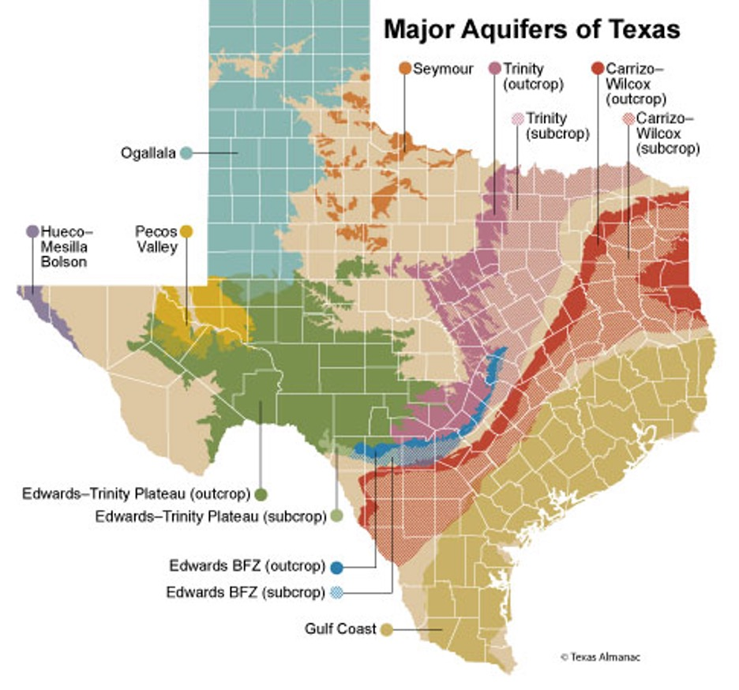

Texas Groundwater: A Shared Resource with Fragmented Rules
Groundwater is the quiet backbone of Texas’s water supply. It provides nearly 60 percent of the water used across the state, sustaining agriculture, cities, and industry, especially during droughts. Yet despite this dependence, Texas continues to manage groundwater through a fragmented legal and institutional framework that struggles to keep pace with growing demand and declining aquifers. Major systems such as the Ogallala, Trinity, and Edwards-Trinity show long-term depletion, revealing a disconnect between how groundwater behaves in nature and how it is governed in law.
In Texas, groundwater is legally defined as private property, leaving extraction largely to the discretion of landowners. To introduce some level of oversight, the state created Groundwater Conservation Districts (GCDs), local entities tasked with permitting, planning, and setting long-term management goals known as Desired Future Conditions. While this model prioritizes local control, it has produced uneven results. More than one hundred GCDs operate with varying rules, technical capacity, and financial resources, and just one-third of the state remains outside the jurisdiction of any district. In these unregulated areas, pumping is largely unmonitored, creating gaps where aquifers receive little formal protection and long-term planning is nearly impossible.
The problem is not only institutional fragmentation, but also a legal separation that ignores hydrological realities. Texas law treats surface water as a public resource and groundwater as private, even though the two are physically connected. Excessive pumping lowers aquifer levels, reduces spring flows, and affects rivers, yet these impacts are rarely accounted for in permitting decisions. Without consistent monitoring and reliable data, groundwater management becomes reactive rather than preventive, undermining informed decision-making and conservation efforts.
Other states offer lessons Texas could adapt without abandoning its emphasis on local governance. California’s Sustainable Groundwater Management Act introduced mandatory sustainability planning, basin-level coordination, and state oversight to ensure long-term groundwater balance. Colorado, meanwhile, integrates groundwater into its broader water rights system, requiring universal measurement, hydrologic modeling, and formal mechanisms to prevent injury to other users and surface flows. While both models come with costs and institutional demands, they demonstrate the value of clear standards, data-driven management, and recognition of surface water–groundwater connections.
Texas does not need a constitutional change to improve its groundwater governance. Strengthening Desired Future Conditions with measurable, statewide minimum standards, closing regulatory gaps in unprotected areas, and requiring universal monitoring would provide a stronger foundation for sustainability. Most importantly, formally recognizing the connection between surface water and groundwater would align the law with hydrological science. As aquifer declines and spring losses become more visible, the challenge is no longer whether Texas can afford to improve groundwater management, but whether it can afford not to.
